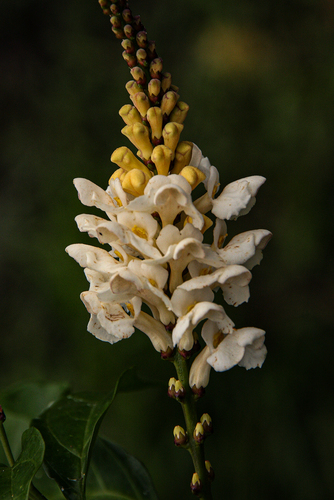

Thomandersiaceae
(No common name)
Thomandersiaceae is a small family of flowering plants in the order Lamiales, containing only a single genus, Thomandersia, with about 6 species. These plants are shrubs or small trees native to the tropical forests of West and Central Africa. The family is notable for its combination of features, including opposite leaves with interpetiolar stipules and fruits resembling those of Acanthaceae.
Overview
Thomandersiaceae is a monogeneric family (containing only the genus Thomandersia) endemic to tropical Africa. Its species inhabit the understory of rainforests and gallery forests. Historically, Thomandersia was often placed within the Acanthaceae family due to similarities in fruit structure (explosively dehiscent capsules with seeds borne on hook-like retinacula). However, molecular phylogenetic studies and distinct vegetative features (like the presence of interpetiolar stipules) support its recognition as a separate family within the Lamiales order.
The family is characterized by shrubs or small trees with opposite, simple leaves, prominent stipules between the petioles, bilaterally symmetrical (zygomorphic) two-lipped flowers typically arranged in racemes or panicles, and the characteristic explosive capsular fruit.
Thomandersiaceae has little direct economic importance but is of significant botanical interest for understanding the evolutionary relationships and character evolution within the large and diverse Lamiales order, particularly its connection to Acanthaceae.
Quick Facts
- Scientific Name: Thomandersiaceae
- Common Name: None widely accepted
- Number of Genera: 1 (Thomandersia)
- Number of Species: Approximately 6
- Distribution: Tropical West and Central Africa
- Evolutionary Group: Eudicots - Asterids - Lamiids - Lamiales
Key Characteristics
Growth Form and Habit
Members are typically shrubs or small trees, sometimes scrambling or somewhat liana-like in habit.
Leaves
Leaves are simple, arranged oppositely on the stem, and usually have entire (smooth) margins. They are often somewhat leathery. A key diagnostic feature is the presence of conspicuous interpetiolar stipules (stipules located in the angle between the opposing petioles), which can be leaf-like or scale-like and sometimes fall off early (caducous). Microscopic mineral concretions called cystoliths are often present in the leaf tissues.
Inflorescence and Flowers
Flowers are arranged in terminal or axillary racemes or panicles. Individual flowers are bisexual and distinctly bilaterally symmetrical (zygomorphic).
- Calyx: Composed of 5 sepals, fused at the base, often unequal in size.
- Corolla: Composed of 5 petals fused into a tube with a two-lipped (bilabiate) limb. The upper lip typically has 2 lobes, and the lower lip has 3 lobes. Flower color is often white, cream, yellow, or purplish, sometimes with nectar guide markings.
- Androecium: Usually 4 fertile stamens, typically arranged in pairs of unequal length (didynamous), attached to the corolla tube (epipetalous). A fifth, posterior stamen is usually present as a small, sterile staminode. Anthers have two pollen sacs (thecae).
- Gynoecium: A single superior ovary composed of 2 fused carpels, forming 2 chambers (locules). Each locule typically contains 2 ovules attached near the base (basal placentation). A single terminal style extends from the ovary, ending in a usually 2-lobed stigma.
Fruits and Seeds
The fruit is a loculicidal capsule, often somewhat flattened, which dehisces (splits open) explosively along the partitions to disperse the seeds. A defining characteristic shared with Acanthaceae is that the seeds are borne on hardened, hook-like stalks derived from the funiculus, known as retinacula or jaculators, which help eject the seeds during dehiscence.
Seeds are typically few (2-4 per capsule), often flattened or lens-shaped, and lack endosperm.
Field Identification
Identifying Thomandersiaceae relies on recognizing its unique combination of vegetative and reproductive features, especially its stipules and fruit type, within its specific geographic range:
Primary Identification Features
- Geographic Location: Restricted to tropical West and Central Africa.
- Habit: Shrubs or small trees.
- Opposite, Simple Leaves: Leaves arranged in pairs along the stem.
- Interpetiolar Stipules: Look for stipules located between the petioles of opposite leaves (a key feature differentiating from Acanthaceae).
- Bilabiate (2-lipped) Flowers: Zygomorphic flowers with a distinct upper (2-lobed) and lower (3-lobed) lip.
- 4 Stamens (+ Staminode): Check inside the corolla tube for the didynamous stamens.
- Explosive Capsule with Retinacula: The fruit type is highly characteristic; look for capsules that split violently and have internal hooks (retinacula) where seeds were attached.
Secondary Identification Features
- Entire Leaf Margins: Leaves typically lack teeth.
- Racemose or Paniculate Inflorescences: Flowers borne in elongated clusters.
- Cystoliths: May appear as streaks or dots on dried leaves (requires magnification).
Seasonal Identification Tips
- Flowering/Fruiting: Occurs during specific seasons, making flowers and especially the distinctive capsules key identification aids when present.
- Vegetative State: Opposite leaves with interpetiolar stipules are reliable year-round characters.
Common Confusion Points
- Acanthaceae (Acanthus Family): Very similar fruit (explosive capsule with retinacula) and often similar flower shape (bilabiate). However, Acanthaceae typically lack stipules entirely. Leaf margins in Acanthaceae are often toothed or lobed, and cystoliths are usually more prominent.
- Other Lamiales Families (e.g., Lamiaceae, Verbenaceae): May have opposite leaves and bilabiate flowers, but generally lack interpetiolar stipules and do not have the characteristic explosive capsule with retinacula. Fruit types in these families are typically nutlets, drupes, or different types of capsules.
- Rubiaceae (Coffee Family): Also have opposite leaves and interpetiolar stipules, but flowers are typically radially symmetrical (actinomorphic), often have an inferior ovary, and fruits are usually drupes, berries, or capsules without retinacula.
Field Guide Quick Reference
Look For:
- Shrub/small tree (Tropical Africa)
- Opposite, simple, entire leaves
- Interpetiolar stipules (key!)
- Bilabiate (2-lipped) flowers
- 4 stamens + staminode
- Superior ovary
- Explosive capsule with retinacula (key!)
Key Distinctions:
- vs. Acanthaceae: Thomandersiaceae HAS stipules.
- vs. Rubiaceae: Thomandersiaceae has superior ovary, zygomorphic flowers, capsule w/ retinacula.
- vs. Other Lamiales: Thomandersiaceae has stipules AND capsule w/ retinacula.
Notable Examples
As the family contains only one genus, specific species are the primary examples:

Thomandersia hensii
(No common name)
A representative species found in Central Africa (e.g., Congo Basin). It exemplifies the typical characteristics of the genus, being a shrub or small tree with opposite leaves, interpetiolar stipules, and bilabiate flowers leading to explosive capsules.

Thomandersia laurifolia
(No common name)
Another species from West and Central Africa, often found in forest undergrowth. Its laurel-like leaves (hence 'laurifolia') are characteristic, along with the family's typical floral and fruit structures. Studies on its pollination or chemistry may exist.
Phylogeny and Classification
Thomandersiaceae is classified within the large order Lamiales, belonging to the lamiid clade of asterid eudicots. This order encompasses a vast range of families, including Lamiaceae (mints), Verbenaceae (vervains), Plantaginaceae (plantains), Oleaceae (olives), Bignoniaceae (trumpet creepers), and Acanthaceae (acanthus).
Molecular phylogenetic studies have consistently shown that Thomandersia forms a distinct lineage separate from Acanthaceae, despite the striking similarity in their specialized explosive fruit capsules with retinacula. This suggests either a case of convergent evolution of this complex fruit type or an ancient divergence where Thomandersiaceae retained stipules lost in the main Acanthaceae lineage. Its exact sister group within Lamiales is still under investigation, but it represents an early-diverging lineage within the broader group that includes Acanthaceae.
Position in Plant Phylogeny
- Kingdom: Plantae
- Clade: Angiosperms (Flowering plants)
- Clade: Eudicots
- Clade: Asterids
- Clade: Lamiids
- Order: Lamiales
- Family: Thomandersiaceae
Evolutionary Significance
Thomandersiaceae, though small, is evolutionarily significant:
- Phylogenetic Position: Represents a distinct, relatively isolated lineage within the Lamiales, helping to resolve relationships among major families in the order.
- Character Evolution: The combination of interpetiolar stipules (common in some other orders like Gentianales but rare in Lamiales) with the Acanthaceae-like fruit capsule provides insights into how these traits evolved and were potentially lost or gained in related lineages.
- Biogeography: Its restriction to tropical Africa contributes to understanding the diversification patterns of Lamiales on the continent.
- Morphological Uniqueness: Highlights the diversity of form within Lamiales, showcasing a unique combination of vegetative and reproductive characters.